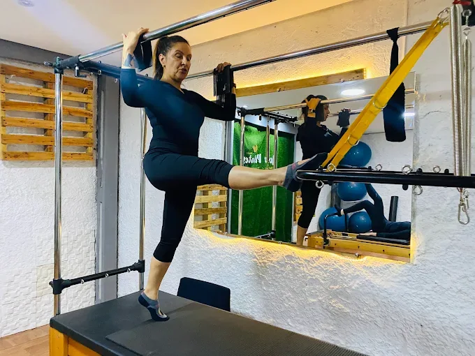
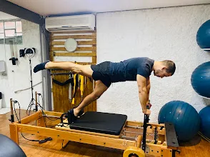

Começando no Pilates
Nunca fez Pilates? Comece no seu ritmo.
↗Pilates e Fisioterapia em Embu das Artes para você cuidar do corpo, melhorar seus movimentos e conquistar mais qualidade de vida.


A Clínica Move Pilates e Fisioterapia oferece um atendimento próximo e personalizado para pessoas que desejam cuidar melhor do corpo, melhorar seus movimentos e ter mais qualidade de vida.
Unimos Pilates e Fisioterapia em um ambiente acolhedor, com acompanhamento profissional e atenção às necessidades individuais de cada pessoa.
Conheça a Move ↗Exercícios orientados de acordo com seu nível, objetivos e necessidades, em um ambiente acolhedor e com acompanhamento profissional.
Quero conhecer o Pilates ↗Cada corpo possui uma história. Por isso, o atendimento deve considerar suas necessidades, objetivos e momento atual.
Falar com um profissional ↗Seu momento é único. Encontre um cuidado que respeita seu ritmo e suas necessidades.
Nunca fez Pilates? Comece no seu ritmo.
↗Acompanhamento pensado para as necessidades dessa fase.
↗Movimento e exercícios respeitando seu ritmo e suas necessidades.
↗Atendimento direcionado para quem está em processo de reabilitação.
↗
Um lugar onde cada pessoa é recebida com atenção, e cada movimento tem espaço para acontecer.
Ótimo espaço, preço e qualidade profissional.AVALIAÇÃO NO GOOGLE
A experiência foi ótima, nota 10. Obrigada Ju por tudo!AVALIAÇÃO NO GOOGLE
Veja nossa rotina, dicas, exercícios e conteúdos sobre Pilates, Fisioterapia, movimento e bem-estar.
@movepilatesestudio ↗Comece hoje a cuidar melhor do seu movimento e da sua qualidade de vida.